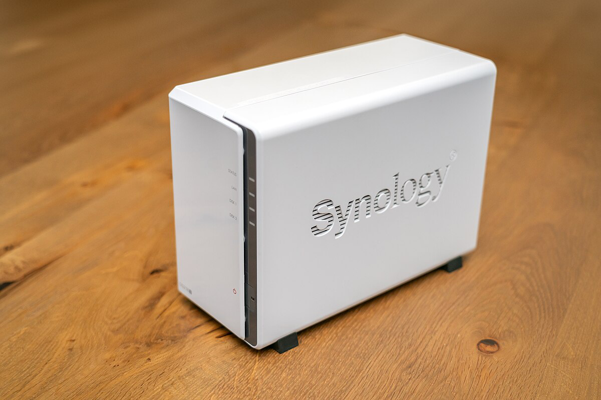

Projet 2 : NAS
Mise en route, préparation et installation de Nas avec sauvegarde.

Détails du projet
Ce projet consistait à préparer, configurer et installer un système de stockage en réseau (NAS). Voici les étapes principales que nous avons suivies :
- Analyse des besoins pour le stockage des données.
- Choix et configuration du matériel (disques durs, boîtier NAS).
- Installation du système d’exploitation et configuration réseau.
- Mise en place de la sauvegarde automatique des données critiques.
- Tests pour assurer la fiabilité et la sécurité des données.
Technologies et outils utilisés
Synology
Utilisation d’un boîtier Synology pour la gestion du NAS.
RAID
Configuration RAID pour la redondance et la protection des données.
Linux
Système d'exploitation utilisé pour certains tests et scripts.